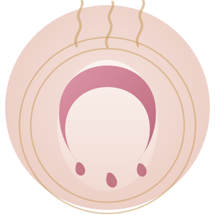
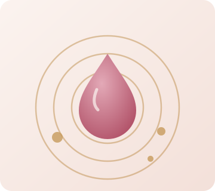

MELTING ESSENCE MASK
いつものバスタイムが、
とろける美容液時間に変わる。
Quanis（クオニス）メルティングエッセンスマスクは、美容液成分100%からできた、とろける新発想のフェイスマスク。
入浴の蒸気で温め、マッサージするだけで、肌にうるおいのヴェールをまとわせます。
※本ページは広告（アフィリエイトリンク）を含みます。当サイト（NAO WEB LAB）が独自に作成した紹介ページであり、Quanis・コスメディ製薬・Paletteの運営会社ではありません。

EMPATHY
こんな肌悩み、ありませんか？
- 季節の変わり目や乾燥で、肌がこわばる感じがする
- 毛穴の開きやたるみが、鏡を見るたびに気になる
- 以前よりハリが足りない気がするけれど、何をすればいいかわからない
- エステに通う時間もお金もかけられないが、自宅でしっかりケアしたい
そんな複合的な"年齢肌"の悩みに向き合うために生まれたのが、美容液成分100%の「Quanis メルティングエッセンスマスク」です。
ABOUT
Quanis メルティングエッセンスマスクとは
Quanis（クオニス）は、コスメディ製薬が展開するスキンケアブランドです。メルティングエッセンスマスクは、美容液成分100%からできた、とろける新発想のマスク。入浴時の蒸気でマスクがじんわりと発熱し、毛穴を開いてうるおいを届けやすい状態に。マスクの上から優しくマッサージすると、美容液成分がとろりと溶け出し、ヒアルロン酸などの保湿成分による潤いのヴェールが肌全体を包み込みます。
FEATURES
メルティングエッセンスマスクの特徴
美容液成分100%処方
マスクのシート自体が美容液成分からできており、肌にのせるだけで凝縮された美容成分にアプローチできる設計です。
入浴の蒸気で発熱
お風呂に浸かりながら装着すると、蒸気を受けたマスクがじんわりと温まり、毛穴を開いてうるおいを届けやすい状態に導きます。
マッサージでとろける
マスクの上から優しくマッサージすると、美容液成分がとろりと溶け出し、ヒアルロン酸などの保湿成分が肌になじんでいきます。
1回分ずつの個包装
1回分ごとの個包装で、必要なときに必要な分だけ使い切れます。持ち運びやすく、旅行や出張先でのケアにも取り入れやすい形状です。

CONCEPT
"塗る"でも"貼る"でもない、
"とろける"うるおい体験
一般的なシートマスクは美容液を"含ませて"肌に届けますが、メルティングエッセンスマスクはシートそのものが美容液成分からできています。お湯の温度で溶けていく感覚とともに、いつものバスタイムを自分だけの美容時間に変えてくれます。
FOR YOU
こんな方におすすめです
- 乾燥・毛穴・ハリ不足など、複合的な年齢肌の悩みがある方
- エステに通う時間はないが、自宅で本格的なケアを試したい方
- 入浴時間を使って効率よくスキンケアを済ませたい方
- 週末や特別な日に、自分をいたわるご褒美ケアを取り入れたい方
HOW TO USE
基本の使い方
- 1
洗顔後の肌に装着する
湯船に浸かる前に洗顔を済ませ、清潔な肌にマスクを装着します。
- 2
湯船に浸かり、蒸気で温める
そのまま入浴し、蒸気を受けることでマスクがじんわりと発熱していきます。
- 3
マスクの上から優しくマッサージする
温まったマスクの上から円を描くように優しくマッサージし、美容液成分をとろけさせます。
- 4
肌になじませて仕上げる
とろけた美容液成分を肌全体になじませます。詳しい仕上げ方法は公式サイトの使用方法をご確認ください。
HOW TO GET
価格・購入について
Quanis メルティングエッセンスマスクは、美容・健康関連のオンラインショップ「Palette」を通じて購入できます。単品のほか、定期購入プランが用意されている場合がありますが、価格・セット内容・特典は変更されることがあります。お申し込み前に、必ず公式サイトで最新の料金・プラン内容・特定商取引法に基づく表記をご確認ください。
IMPORTANT
ご利用前に知っておきたいポイント
- 効果の感じ方には個人差があり、すべての方に同じ結果を保証するものではありません。
- 肌質や体調によって合う・合わないがあります。使用中に赤み・かゆみなど肌に異常を感じた場合は、直ちに使用を中止してください。
- 定期購入プランを選択する場合は、継続回数や解約条件など、公式サイトの規約を事前にご確認ください。
- 価格・キャンペーン内容・配合成分の詳細は変更される場合があるため、最新情報は必ず公式サイトでご確認ください。
FAQ
よくある質問
美容液成分を凝縮したスペシャルケア用のマスクとして紹介されており、週末や特別な日のケアとしての使用がすすめられる場合があります。使用頻度の目安は公式サイトでご確認ください。
公式情報によると、入浴時に洗顔後の肌へ装着し、蒸気で温まったマスクの上から優しくマッサージすることで美容液成分がとろけて肌になじむ設計です。詳しい手順は公式サイトの使用方法をご確認ください。
価格・セット内容・定期購入プランの詳細は、販売サイト（Palette）によって変更される場合があるため、お申し込み前に必ず公式サイトで最新情報をご確認ください。
肌質には個人差があります。はじめて使用する際は少量から試すなど、公式サイトに記載の注意事項に沿ってご利用のうえ、肌に異常を感じた場合は使用を中止してください。
定期購入プランの継続回数や解約条件は販売サイトの規約によって定められています。お申し込み前に公式サイトの利用規約・特定商取引法に基づく表記を必ずご確認ください。
ご利用にあたっての注意事項
- 本ページは、アフィリエイトプログラムを利用してNAO WEB LABが独自に作成した紹介ページです。Quanis・コスメディ製薬・Paletteの運営会社が制作・監修したものではありません。
- 掲載内容は2026年9月時点で確認できた公開情報をもとに作成しています。価格・配合成分・利用規約は変更される場合がありますので、お申し込み前に必ず公式サイトで最新情報をご確認ください。
- 効果には個人差があり、当ページは特定の効果・結果を保証するものではありません。